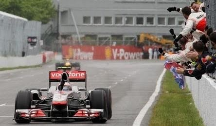

In ihm ist die Power des Fahrzeugs versteckt. Ein Team hat die Wahl, selbst einen zu bauen, oder ein Kundenteam eines anderen zu sein. Mercedes, Ferrari, Honda und Renault bieten Motoren an. Racing Point und Williams haben einen Mercedes-Motor; Alfa Romeo und Haas einen von Ferrari, Red Bull und Alpha Tauri beziehen den von Honda und McLaren benutzt einen Renault-Motor. Die Teams, die die Motoren für andere herstellen benutzen sie selbstverständlich auch für sich. So etwas wird dann Werksteam genannt.
Getriebe:
Das Getriebe eines Formel 1-Wagens hat acht Gänge und ist sequentiell, d. h. es lässt sich nur in den nächsthöheren oder nächstniedrigeren Gang schalten. Geschaltet wird mit den sogenannten Schaltwippen, die sich hinter dem Lenkrad befinden und mit der Hand betrieben werden.
ERS:
Das ERS, lang „Energy Recovery System“, also Energierückgewinnungssystem bringt dem Fahrer Extra-Power. Es lässt sich nochmal in zwei Bereiche unterteilen. Einmal in ERS-K, das mithilfe des MGU-K (Motor-Generator-Unit-Kinetic) funktioniert: Es gewinnt die Energie beim Bremsen. Zum Anderen in ERS-H, das mithilfe des MGU-H (Motor-Generator-Unit-Heat): Es nutzt die Abgaswärme des Motors. Beide Sorten haben Begrenzungen in der maximalen Drehzahl. ERS-K hat ebenfalls Begrenzungen im maximalen Drehmoment und in der maximalen Energieaufnahme.
Chassis:
Das Chassis, auch Fahrgestell genannt, hält die wichtigsten inneren Komponenten des Fahrzeugs zusammen und ist außerdem wichtig für die Aerodynamik, also der Windschnittigkeit. An ihm können vom Team individuelle, aerodynamische Entwicklungen ihren Platz finden.
Heck- und Frontflügel:
Der Heckflügel (Abbildung unten, im geschlossenen Zustand) sorgt für Stabilität, genauer gesagt für den Abtrieb (engl. downforce), also die Geschwindigkeit und Grip in Kurven, besonders in schnelleren. Der Heckflügel kann vom hinteren Fahrer in sogenannten DRS-Zonen auf den Geraden heruntergeklappt werden (Abbildung oben), wenn er weniger als eine Sekunde Rückstand auf den Vordermann hat. Somit wird der Luftwiderstand verringert und man ist deutlich schneller, manchmal bis zu 30 km/h, was echt einen großen Unterschied ausmacht. Der Abtrieb sinkt allerdings extrem, sodass es in Kurven nie verfügbar ist.
DRS (Drag Reduction System) ist also eine Überholhilfe. Im Training und im Qualifying steht es immer zur Verfügung, es sei denn, die Strecke ist nass, dies würde ein zu hohes Risiko darstellen. Im Rennen wird es für gewöhnlich ab der dritten Runde aktiviert.
Der Frontflügel ist ebenfalls ein Bauteil, was den Abtrieb erhöht. Am Frontflügel können ebenfalls eigens entwickelte Bauteile angebracht werden. In Straßenrennen, wie z.B. Monaco oder Baku, wo die Mauer sehr nah an der Strecke ist, muss man sehr aufpassen, sich den Frontflügel bei einem Fehler nicht kaputt zu machen.
Radaufhängung:
Die Radaufhängung dient, wie der Name schon sagt, den Reifen. Die Radaufhängung besteht aus mehreren dünnen Stäben, die die Befestigung für die Räder halten. Auch mit ihnen muss der Pilot in den Rennen aufpassen. Brechen sie bei einer Kollision, ist das Rennen beendet, da es zu viel Zeit kostet, sie zu reparieren. Sie spielen auch eine große Rolle bei der Aerodynamik, da der Fahrtwind ja irgendwie daran vorbei muss.
Cockpit & Lenkrad:
Das Cockpit verbindet den Fahrer mit dem Auto und erlaubt ihm, eins mit dem Wagen zu werden. Der Fahrer liegt mehr im Cockpit, als dass er sitzt, es gibt nämlich keinen wirklichen Sitz, sondern nur diese „Liege“. Die Beine sind ausgestreckt, um hinten an die Pedale zu kommen. Es gibt ein Gas- und ein Bremspedal, keine Kupplung. Der Fahrer muss bei Schalten also nicht vom Gas gehen, was viel Zeit spart. Seit 2018 ist über dem Cockpit ein sogenannter Halo befestigt, ein Bügel, der für die Sicherheit des Kopfes vom Fahrer sorgt.
Das Lenkrad sieht grundlegend so aus: Im Internet findet man eine Vielzahl von Videos, in denen Piloten ihre Lenkräder erklären, z.B. Michael Schumacher oder Mercedes-Pilot Valtteri Bottas.
Zusammenfassend kann man sagen: Sehr viele Knöpfe und Schalter, eine eigene Wissenschaft für die viel Fachwissen erforderlich ist. Im Display in der Mitte
kann man außerdem noch vieles anpassen. In die Löcher links und rechts oben steckt man seine Daumen, sodass man die hinten sichtbaren Schaltwippen mit den restlichen Fingern bedienen kann.
Die Reifen:
Es gibt 5 Typen von Trockenreifen: C1-C5. Je höher die Zahl, desto weicher, dadurch schneller, aber auch schneller abgenutzt der Reifen. Reifenlieferant ist Pirelli. Pirelli bestimmt eine Kombination aus drei Trockenreifen (z.B. C2, C3, C4). Diese werden dann „Hard“, oder harte Reifen/Mischung, „Medium“, oder mittlere Reifen/Mischung und „Soft“, oder weiche Reifen/Mischung genannt. In einem reinen Trockenrennen müssen mindestens zwei unterschiedliche Mischungen verwendet werden (z.B. weich & hart). Außerdem gibt es Intermediates („Inters“) für Übergangsbedingungen und Regenreifen für starken Regen.

Das Rennwochenende:
Ein Rennwochenende dauert von Freitag bis Sonntag. Es gibt drei Freie Trainings, zwei davon am Freitag und eines am Samstag. Diese dauern 90 Minuten.
Am Samstag, für gewöhnlich um 14:00 Ortszeit steigt das Qualifying. Dies funktioniert folgendermaßen: Es gibt drei Abschnitte und die Fahrer versuchen, das Beste aus ihrem Auto herauszuholen, sprich: die schnellste Runde zu fahren. Der am Ende errreichte Platz ist zugleich der Startplatz in der Startaufstellung für das Rennen (der Erste darf von der ersten Positioin aus fahren). Der erste Abschnitt (genannt: Q1) dauert 18 Minuten. Ist die Zeit abgelaufen, dürfen die Fahrer, die noch in der Zeit ihre Runde beginnen konnten, ihrer Runde zuende fahren. Nach den 18 Minuten werden die fünf langsamsten Fahrer aus dem Qualifying eliminiert. In Q2 wird es entscheidend für das Rennen. Wenn man es in Q3 schafft, muss mit der Art von Reifen gestartet werden, mit dem in Q2 die schnellste Runde gefahren wurde. Auch in Q2 werden die fünf langsamsten Fahrer eliminiert. In Q3 fahren dann die 10 verbleibenden Piloten um die sogenannte Pole-Position, also den ersten Startplatz.
Das Rennen: Ein Rennen dauert für gewöhnlich etwas weniger als zwei Stunden. Es werden so viele Runden gefahren, dass 305 Kilometer gerade überschritten werden. Meistens sind das 50-70 Runden, abhängig je nach Strecke. In einem Trockenrennen müssen mindestens zwei verschiedene Typen von Trockenreifen zum Einsatz kommen.
Außerdem muss mindestens ein sogenannter Boxenstopp absolviert werden: Auf jeder Strecke gibt es vor der Start-/Zielgeraden einen Eingang zur Boxengasse, in den der Pilot fährt. Er fährt die Gasse entlang bis zu seinem Team und biegt dort in die vorgezeichnete Box ein. Innerhalb der Boxengasse gilt ein Tempolimit von 60-100 km/h, abhängig je nach Rennstrecke und Land. Der schnellste Boxenstopp in der Formel 1 liegt bei 1,82 Sekunden! Er wurde beim Großen Preis von Brasilien 2019 von der Boxenstopp-Crew von Red Bull aufgestellt.
Die Punkteverteilung beim Rennen lautet wie folgt:
Fährt ein Fahrer die schnellste Runde des Rennens und beendet in den Top 10, bekommt er einen Extra-Punkt.
Nach dem Rennen kommt es zur Siegerehrung. Die ersten drei Fahrer stellen sich auf das Podest. Der Sieger darf einen wichtigen Teammitarbeiter mit auf das Podest nehmen. Die Hymne der Nationalität des Siegers und des Teams werden gespielt. Dann werden Pokale überreicht
Weltmeisterschaftswertungen: Es gibt zwei WM-Wertungen. Einmal die Fahrerwertung und die Konstrukteurswertung. In der K.-Wertung werden die Punktzahlen der Fahrer des Teams zusammenaddiert.
.jpg)

.png)